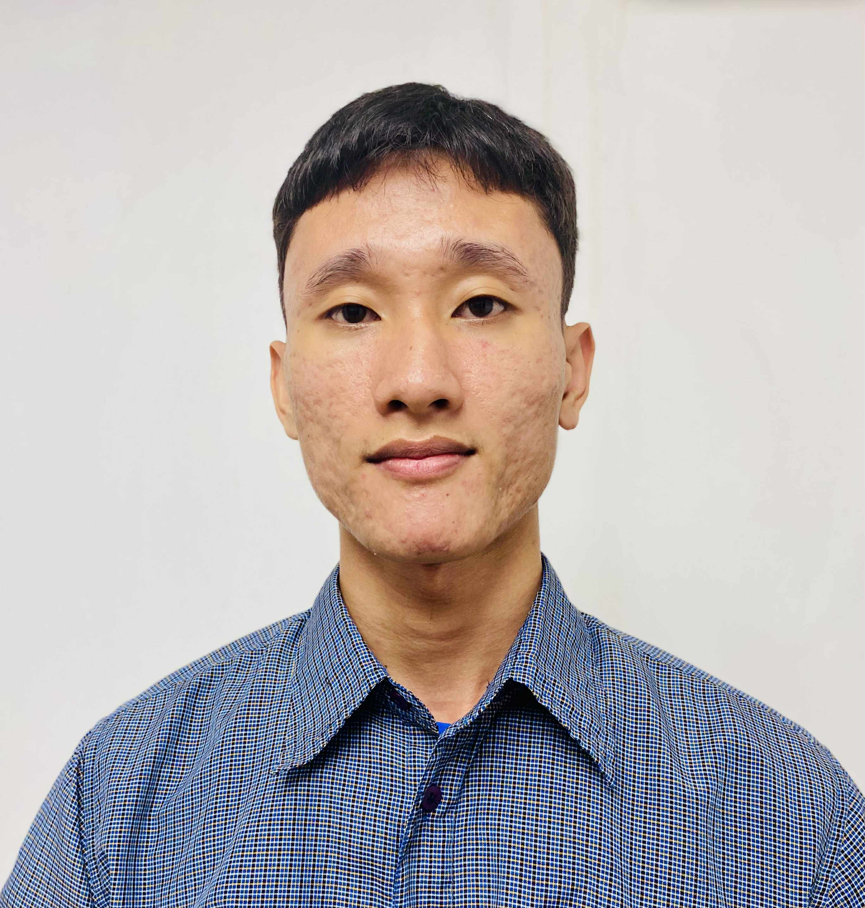

Gabriel Caratihan

Customer Service & Sales Professional
General Mariano Alvarez, Cavite Philippines
Professional Summary
Results-driven Customer Service & Sales Professional with 2+ years of experience boosting sales and delivering exceptional client support. Proven track record of driving a 20% sales increase and maintaining a 98% customer satisfaction rate. Skilled in the full client lifecycle—from outbound prospecting and lead nurturing to inbound support and retention. Leverages a background in Psychology and Programming to connect with clients, analyze behavior, and quickly master new technologies.
Core Competencies
- Customer Service & Sales: Inbound & Outbound Calls | Live Chat Support | Lead Generation | Sales Cycle Management | Issue Resolution | Customer Retention | Objection Handling | Data Entry
- Technical Skills: Microsoft 365 | Google Workspace | CRM Platforms (Salesforce/HubSpot basics) | Slack | Zoom | Asana | Trello | Mailchimp
- Communication: Fluent English (C2) | Professional Correspondence | Active Listening | Persuasive Communication | Empathy & Rapport Building
Professional Experience
Sales Manager | Algorithmics
August 2024 - November 2024
- Increased sales by 20% in three months through outbound lead calls and consultative selling.
- Built and managed a consistent pipeline of qualified leads, scheduling demos and follow-ups.
- Delivered persuasive product presentations, converting prospects into long-term clients.
Customer Service Representative | Alorica Teleservices Inc.
August 2022 – March 2024
- Maintained a 98% customer satisfaction rate supporting a U.S.-based insurance provider.
- Resolved complex customer concerns with empathy and product expertise, exceeding KPIs.
- Promoted to Subject Matter Expert & Performance/Quality Improvement Agent for leadership and service excellence.
- Analyzed client data to track performance metrics (daily, weekly, monthly), driving service improvements.
Education
College - Computer Programming
Imus Computer College (Expected 2027)
College – BS Psychology
Cavite State University (2022 - 2023)